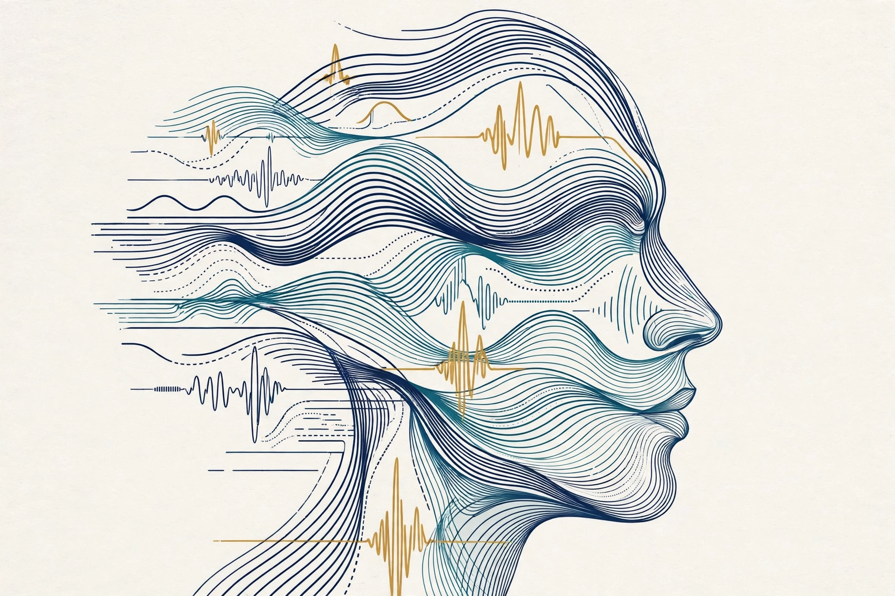
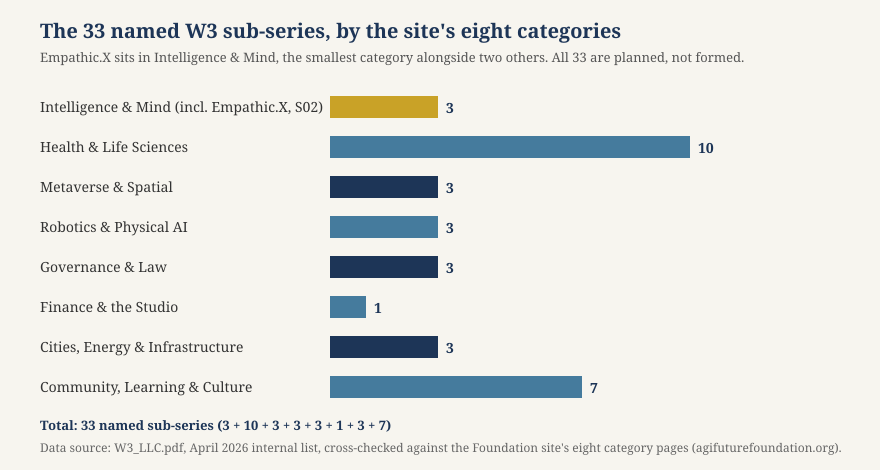

Article 51 · Empathic.X · AGI Future Foundation
What Machines Can — and Cannot — Read from a Face or a Voice
Machines can now measure signals that correlate with emotion — a face, a voice, the sweat on a wrist, the regularity of a night’s sleep — and sometimes make useful guesses about stress or arousal.
Affective computing, thirty years on
Empathic.X (W3 Series 2) — long-form article 1 of 3

Illustration (generated image, not a photograph): a face drawn from signal lines — a picture of the field’s central question, not of a working system.
Machines can now measure signals that correlate with emotion — a face, a voice, the sweat on a wrist, the regularity of a night’s sleep — and sometimes make useful guesses about stress or arousal. What they cannot do, on the present evidence, is read a person’s feelings from their face reliably, specifically, and across cultures and contexts. The gap between those two sentences is where most of the marketing, most of the harm, and most of the interesting work live.
The existing Foundation article on Empathic.X (article-02-empathic-x.html) says what the series is and is not: a name, a number, a partially built world, and an open question about the line between supporting human empathy and pretending to feel. This article does not repeat that ground. It takes the science seriously, because a series that gets the science wrong will build the wrong thing — a machine that confidently misreads people and calls it empathy.
The field and its founder
Affective computing began, as a named field, with one researcher and one book. Rosalind Picard, founder and director of the Affective Computing Research Group at the MIT Media Lab, published Affective Computing with MIT Press in 1997. Her argument was simple and, at the time, unfashionable: if computers were going to be genuinely intelligent and interact naturally with people, they would need the ability to recognise, understand, and even express emotions — not because feelings are decoration on top of thinking, but because emotion plays a rational role in human intelligence, in decision-making, in learning, and in relationships. A machine that ignored how a person felt would keep doing the thing that frustrated them, like a colleague who never notices the room going quiet.
Picard’s group spent the following decades building the field’s basic instruments: wearable sensors that measure skin conductance and heart rate, cameras and microphones that track expression and voice, and algorithms that combine those channels into estimates of states like interest, distress, and pleasure. She also co-founded two companies that carried the work out of the lab — Affectiva, in 2009, to measure emotion from faces and voices, and Empatica, which makes wearable physiological sensors.
The field’s early demonstrations were deliberately modest. In a 1997 MIT lecture marking the book’s publication, Picard described computers that could recognise emotional states from facial expression, vocal intonation, posture, and gesture — and she reported early laboratory work in which skin-conductivity signals identified three different emotions with what she described as an 80 percent accuracy rate. That number is worth pausing on, because it illustrates a pattern that recurs across thirty years of this field: a striking accuracy figure, achieved in a laboratory, on a small number of categories, under controlled conditions. The question is never only whether a number is real. It is whether it survives contact with the world — new people, new cultures, bad lighting, a camera that is not pointed at a posed face. Mostly, the answer has been: only partly.
What machines actually sense
It helps to be concrete about the channels, because “emotion AI” as a phrase hides how many different things it can mean. A system that claims to read emotion is usually reading one or more of four kinds of signal.
First, the face. Cameras track the movement of facial muscles — eyebrows raised, lips pressed, jaw dropped — and software maps those movements onto categories such as happiness, anger, or surprise. This is the most visible channel and the most commercially developed, because a webcam is cheap. It is also the channel where the science is weakest, as the next section explains.
Second, the voice. Microphones measure pitch, pace, volume, pauses, and the tremor or tension in speech. A voice can carry arousal — how activated or calm a person is — more reliably than it carries a specific emotion, and it can be analysed from a phone call without a camera at all. But a voice is also shaped by accent, by language, by a cold, by the habit of speaking softly on a train, and by the deliberate control people exercise over how they sound.
Third, physiology. Wearable sensors measure the body directly: skin conductance (how much the skin sweats, driven by the sympathetic nervous system), heart rate and heart-rate variability, breathing, temperature, and movement. These signals are harder to fake than a smile and harder to perform than a tone of voice, which is why much of the most serious work in the field — including Picard’s — has moved toward the wrist rather than the webcam. A wristband can notice a seizure, a sleepless night, or a rising stress response without ever looking at a face.
Fourth, behaviour and context. How someone holds a phone, how they grip a steering wheel, how regularly they sleep, how much they talk to other people at night. Picard’s group has worked on combining many such low-quality sensors on the argument that no single channel is trustworthy, but a combination, gathered over time, can be. In her 2025 interview she put the point bluntly: “There is no magic sensor that will accurately convey how someone is feeling. We need to combine AI learning with lots of information from multiple channels gathered over time to even make a guess at feelings.”
That sentence — “to even make a guess” — is the right register for the whole field. Affective computing, done honestly, is a guessing discipline. Its outputs are estimates with error bars, not readings. The trouble starts when the error bars are left out of the product.
The face problem
The most important paper in this field for a general reader is not a demonstration of what works. It is a review of what does not. In 2019, Lisa Feldman Barrett of Northeastern University, together with Ralph Adolphs, Stacy Marsella, Aleix Martinez, and Seth Pollak, published “Emotional Expressions Reconsidered” in Psychological Science in the Public Interest. They asked a plain question: can emotions be read from facial movements? They examined six categories — anger, disgust, fear, happiness, sadness, and surprise — and their answer was careful, quantitative, and unwelcome to an industry built on the opposite assumption.
People do sometimes smile when happy or scowl when angry, more often than chance would predict. But the expected facial configuration appeared in only about 19 percent of emotional episodes on average, in an expanded meta-analysis covering 89 effect sizes from 47 studies with 3,599 participants, with category values ranging from about 15 to 25 percent. The authors’ interpretation was that this is no evidence to weak evidence of reliability. The same configuration can express more than one emotion, or something that is not an emotion at all. People scowl when they are concentrating, when the sun is in their eyes, when they are confused — and, as Barrett has noted in public discussion of the work, people in Western cultures scowl only about 30 percent of the time when they are angry, moving their faces in other ways the other 70 percent of the time. The smile fares no better as a diagnostic: in field studies of winning judo fighters cited in the review, only 8 of 55 and 25 of 119 produced the broad, eye-crinkling “Duchenne” smile after victory, and smiling tracked social interaction better than reported happiness.
The review also exposed a methodological habit that flatters the field. Many of the studies that built the case for universal facial expressions showed participants posed photographs — a scowling face standing in for anger — and asked them to pick from a short list of emotion words. Give people a list and they will match competently; ask them to describe a face freely, without the list, and their ability to name the exact emotion plummets. Barrett’s own cross-cultural work makes the point vividly. In Namibia, members of the Himba community, with little exposure to Western culture, were shown the same photographs that Western participants label confidently. Without a list of words to choose from, they described the faces in ways that did not map onto the expected categories. What had been presented as psychological universals, Barrett concluded, may actually represent Western, or even American, culture.
None of this means faces carry no information. A face is one channel among several, and in context — with knowledge of the person, the situation, the conversation, the body, and the voice — it helps people understand one another. What the evidence does not support is the strong claim: that a particular facial configuration reliably and specifically indicates a particular emotion, in any person, in any culture, in any situation, well enough to make consequential decisions about them. Barrett and her co-authors recommend that researchers use neutral language — “facial configuration” or “pattern of facial movement” — rather than “emotional expression,” precisely because the second phrase smuggles in the conclusion. For a series named Empathic.X, that language discipline is not pedantry. It is the difference between a tool that reports what it saw and a tool that claims to know what a person feels.
The practical consequence is visible in the accuracy numbers that circulate in the trade press. A model can score very highly on a dataset it has effectively seen before, and collapse on people it has never met. One 2026 industry guide, reporting a study in Scientific Reports, describes a multimodal voice-and-face model scoring 95.8 percent on a random split of the RAVDESS dataset — and 48.1 percent (plus or minus 9.8) under speaker-independent, leave-one-speaker-out testing, where the model is judged on people it never trained on. That second number is the honest one for deployment. The guide’s own planning advice is blunt: expect roughly 45 to 60 percent on a real, diverse call for a multi-class emotion task, not the 80 to 90 percent a vendor deck implies. Treat that range as reported rather than settled — it comes from an industry guide summarising a single study, not from a meta-analysis — but it points in the same direction as the Barrett review: the laboratory number is not the world number.
Bias makes the gap worse in a specific direction. Peer-reviewed audits of the standard facial-expression datasets — AffectNet, RAF-DB, FER-2013, ExpW — find that all of them carry demographic and expression bias, and that the highest-accuracy models tend to be the most biased. Accuracy drops further on darker skin tones, on elderly faces, and on neurodivergent users whose expressive baseline differs from the training distribution. A system trained mostly on young, light-skinned, posed faces will misread exactly the people a care system is most likely to serve.
The voice problem, and the context problem
Voice carries a related but different set of traps. A voice can tell you a great deal about arousal: whether someone is speaking quickly and loudly, or slowly and quietly, tracks activation fairly well. It is much less reliable for naming the emotion behind the activation. Raised volume can be excitement, anger, or a bad phone connection. A flat voice can be depression, exhaustion, cultural reserve, or a person who has learned to keep their voice level in a meeting. And voice, like face, is performed: people modulate how they sound for an audience, and they do so more, not less, when they know they are being measured.
The deeper problem is context, and it applies to every channel. An emotion is not a property of a face or a voice in isolation; it is a property of a person in a situation. Human beings read one another well — when they do — because they bring a history: they know what happened yesterday, what the person cares about, what their baseline looks like, what “fine” means when this particular person says it. A machine that sees a single frame, or hears a single sentence, has none of that.
This is why the most credible work in affective computing is longitudinal and multimodal: it watches the same person over days and weeks, combines channels, and learns that person’s baseline. Picard’s group reported that by comparing data from the previous day, and learning from students with similar lifestyles, they could forecast a student’s stress, health, and mood for the following day with accuracy around 80 percent — against a random baseline close to 50 percent. That is a genuinely interesting result, and it is also a carefully bounded one: the study was limited to college students in the New England area, and the most impactful factors were ordinary ones — above all, the regularity of sleep. For most of the students in the study, stress could be reduced by going to sleep and waking up at about the same time every day. Positive communication with others at night also tended to lower the stress experienced during the following day, and the difference was visible in physiological features during sleep, particularly the electrodermal response — the electrical measure from the surface of the skin.
Read that result the right way round and it is a lesson in humility, not a product pitch. The strongest signal was not a face. It was a routine. The most useful intervention was not a label — “you are stressed” — but a behaviour a person could control: keep your sleep regular. A system that tells someone they are stressed and leaves them with nothing to do about it has added a burden, not a benefit. A system that notices a pattern and suggests a small, controllable change has done something closer to care.
What works better: physiology, and knowing when to act
If faces are the weakest channel, physiology is where the field has its most defensible wins — and they are wins of a particular kind. They are not about naming feelings. They are about detecting events in the body and acting on them in time.
The clearest example comes from Picard’s own lab, and it began as an apparent sensor malfunction. During an experiment measuring skin conductance from wristbands worn by children who could not easily articulate their feelings, Picard noticed that the reading from one wrist was abnormally higher than the other. It was not a malfunction: the child had had an epileptic seizure. Larger studies at Boston Children’s Hospital showed that wrist signals pointed toward abnormal electrical activity inside the brain, and that the type of seizure triggering the largest skin-conductance changes can cause apnoea — the patient stops breathing after the seizure appears to have ended — in which case simply stimulating the patient, sometimes just turning them on their side, can restart breathing. Picard’s team built an algorithm that runs on a wristband, detects grand mal seizures, and sends a GPS location and an emergency alert to a caregiver list. The resulting product, Embrace, became the first FDA- and CE-approved smartwatch used in neurology for monitoring grand mal seizures in adults and children aged six and over.
Notice what Embrace does not do. It does not claim to know how the wearer feels. It detects a specific physiological event, with a known signature, and it summons a human. That is the template worth copying: a narrow claim, a measurable signal, a human at the end of the alert. Affective computing is at its best when it is an early-warning instrument and a summoner of human care, and at its worst when it is a judge of inner life.
The same discipline applies to the field’s other showcase application, driver monitoring. Picard’s group, working with NTT DATA, has built “emotion navigation” research that analyses the emotions and stress levels of drivers — using physiological sensors and cameras in a driving simulator — and intervenes to improve safety and comfort, for example by changing the voice of the driving assistant to sound calmer when stress is rising. The goal is not to label the driver but to change the environment: a calmer voice, a safer arrival, less stress carried through the front door into the family evening. It is a modest, testable idea, and its success can be measured in outcomes that matter, like safety and self-reported well-being, rather than in the accuracy of an emotion label nobody can verify.
There is a general principle here, and it is the one Picard herself states most clearly. In her 2025 interview she said the first question is not “what can we sense?” but “what is a person comfortable to have sensed?” Consent comes before capability. The forecast and control of personal data, she argued, “should only be accessible and shared by the individual” — if employee stress data were given directly to an employee’s boss, it could hurt that employee’s health and performance. Her prototype “mood mirror” makes the same point in hardware: a mirror that detects the expressions of the people standing in front of it and overlays a corresponding icon onto each face, designed to show people how the technology is likely to interpret the emotional messages they send with their faces, even when that interpretation might not correspond accurately to their true internal feelings. Any series in this domain should keep a mood mirror on the wall: a standing reminder that the system can be wrong, visibly wrong, about the very people in front of it.
The law has moved first
While the science has been arguing about faces, the law has drawn a line. Article 5(1)(f) of the European Union’s AI Act, Regulation (EU) 2024/1689, prohibits AI systems that infer the emotions of a natural person in the workplace and in education institutions, except for medical or safety reasons. The prohibition has applied since 2 February 2025 — the earliest compliance date in the Act, six months ahead of most of its other obligations — and violations sit in the Act’s highest penalty tier, with administrative fines of up to €35 million or 7 percent of total worldwide annual turnover, whichever is higher. The medical and safety carve-out is narrow and concrete: monitoring driver or pilot fatigue, or a patient’s well-being in a clinical setting, remains lawful. Scoring a candidate’s enthusiasm in a video interview, flagging employee engagement from a webcam, or inferring a student’s attention during an online lecture does not.
The significance for Empathic.X is not that the Foundation operates in the EU today — it does not, and this article is not legal advice — but that the world’s largest market has decided the strong claim is too dangerous to deploy in the two settings where power is most unequal: work and school. A series that planned to build emotion inference for hiring, performance management, or classroom monitoring would be building a product that is prohibited in the EU and, increasingly, unwelcome everywhere else. California’s AB 1883, as reported in industry coverage, bans AI emotion inference on employees from 1 January 2027. The direction of travel is consistent, and a prudent series reads it early: the defensible applications are the ones with consent, with a medical or safety purpose, with a human in the loop, and with the data staying with the person it describes.
What “empathic” machines should do instead
None of the above is an argument that machines have nothing to offer in the emotional life of people. It is an argument for a narrower, more honest job description. Here is what the evidence supports a machine doing well:
Notice arousal, not identity. A system can usefully track activation — stressed or calm, engaged or disengaged, alert or fatigued — and treat that as a signal to adjust the environment, slow down, offer a break, or summon a human. Arousal is measurable, and it is honest to report it as arousal rather than dressing it up as “anger” or “joy.”
Combine channels over time, for one person. The strongest results come from multimodal sensing of the same individual across days, learning that person’s baseline. A single frame of a stranger is the weakest possible input.
Report uncertainty, visibly. A system that says “the face looks tense; that could mean concentration, frustration, or bright light — here is what else I noticed” is a tool. A system that stamps “ANGRY — 94%” on a person is a libel machine with a user interface. Low-confidence readings should trigger a human check, not an automated decision.
Ask what the person is comfortable having sensed. Picard’s question should be the first screen of any product in this domain, not the last paragraph of its privacy policy. What is collected, why, how long it is kept, who can see it, and how a person opts out or deletes it — written down before anything is collected. The Foundation’s own article on Empathic.X makes the same point: for this domain, the absence of a data policy is not a detail to be filled in later; it is the first thing that would need to exist.
Keep the data with the person. Stress forecasts, sleep patterns, and physiological signals are among the most personal data a person can produce. The default should be that they belong to the individual, are accessible to the individual, and are shared only with that person’s informed approval — never handed to an employer, a school, or an advertiser as a condition of using the tool.
Hand off to a human, by design. The best outcome of an empathic machine is often that a human arrives: a caregiver after a seizure, a friend after a bad night, a counsellor when distress is detected. The handoff should be guaranteed by the design — a named human, a reachable channel, a time limit — not left to chance.
Never claim to feel. A machine can recognise a pattern, adjust a voice, or suggest a kinder phrasing. It cannot feel empathy, and it should not say that it does. The claim is not only false; it is the specific deception that makes people trust a system more than its evidence warrants, and disclose more than they would to something they understood to be a machine.
What this means for Empathic.X
Empathic.X is a proposed series, and the science above is the reason its thinness is an advantage. There is no product to defend, no vendor claim to walk back, no dataset to explain away. The series can choose its line before it builds anything, and the evidence points to where the line should be.
First, Empathic.X should define itself as a series that supports human empathy rather than simulating it. The distinction is already the central question in the Foundation’s own article on the series; the research gives it teeth. Supporting empathy means building tools that help a person notice another’s distress, suggest a kinder phrasing, slow a conversation down, or flag that someone may need human care. Simulating empathy means building a machine that claims to feel, labels a stranger’s inner life from a single frame, or substitutes a machine response for human care where a human was needed.
Second, the series should adopt the language discipline the science demands: facial configuration, not emotional expression; estimated arousal, not detected anger; a guess with a confidence interval, not a reading. That discipline should be visible to users, not buried in documentation.
Third, the data policy comes before the product. What emotional signals, if any, would the series collect; what it would do with them; how long it would keep them; who could see them; how a person opts out or deletes them — written down, by a named human steward, before anything is collected.
Fourth, the series should measure itself by outcomes, not by accuracy claims. Did people sleep more regularly? Did drivers arrive calmer? Did a caregiver arrive in time? Did a conversation go better? Those are measurable, and they are the things that matter. An accuracy score on a labelled dataset is not a measure of helping anyone.

Chart: the 33 named W3 sub-series grouped by the Foundation site’s eight categories. Empathic.X is one of three in Intelligence & Mind, alongside Cognition.X (Series 1) and InfoGurus (Series 33). Data source: W3_LLC.pdf, April 2026 internal list, cross-checked against the site’s eight category pages. All 33 series are planned, not formed.
Empathic.X’s neighbours in that category are instructive. Learning (Cognition.X, Series 1) depends on a teacher noticing when a student is lost or distressed. InfoGurus (Series 33) depends on knowing what a person actually needs rather than what a system assumes. An empathy series that got the science right would sit across those neighbours as a shared discipline — a way of building systems that notice people carefully, report uncertainty honestly, and hand off to humans promptly — rather than as a product that claims to feel. That is a programme worth funding, and it can only be funded honestly: by donation and grant to the Foundation, which is a filed nonprofit, with no claim of tax-deductibility until an IRS determination letter exists, and no offer of securities anywhere in it.
Glossary
Affective computing — Computing that relates to, arises from, or deliberately influences emotion and other affective phenomena. The term was introduced by Rosalind Picard in her 1997 book of the same name.
Arousal — How activated or calm a person is, as distinct from which emotion they are experiencing. Arousal is more reliably measurable from face, voice, and physiology than a specific emotion category.
Duchenne smile — A broad smile involving both the mouth and the muscles around the eyes, often treated as a marker of genuine happiness. Field studies find it appears in only a minority of victorious athletes, and it tracks social interaction better than reported happiness.
Electrodermal response — The electrical conductance of the skin, which rises with sweating driven by the sympathetic nervous system. Measured from the wrist, it is a useful signal for stress and arousal, and it played a central role in the seizure-detection work that led to the Embrace watch.
Facial configuration — The neutral term recommended by Barrett and colleagues for a pattern of facial movement, used instead of “emotional expression” to avoid assuming the movement indicates a specific emotion.
Speaker-independent testing — Evaluating a model on people it never trained on. Accuracy under this protocol is typically far lower than on a random split of the same dataset, and it is the honest number for deployment.
Frequently asked questions
Can AI read my emotions from my face?
Not reliably. Research reviewed by Barrett and colleagues in 2019 found that the expected facial configuration for an emotion appears in only about 19 percent of emotional episodes on average. A face can suggest arousal or a likely state in context, but it cannot diagnose a feeling on its own.
Is there any emotion-sensing technology that works well?
Yes, for narrow, specific jobs. Wrist-worn physiological sensors can detect grand mal seizures and summon help — the Embrace watch is FDA- and CE-approved for that purpose. Multimodal sensing over days can forecast next-day stress for a known individual with accuracy around 80 percent in a limited student study. The pattern is: narrow claim, known person, measured outcome, human at the end.
Does Empathic.X have a product?
No. Empathic.X is a proposed W3 Series 2, not formed, funded, or offered. Its anchored world at 47.440, −179.350 has a published fabric but does not render fully, because its assets are not hosted.
How can I support this work?
Through donations and grants to the AGI Future Foundation, the filed California nonprofit that stewards the series. Donations are not claimed to be tax-deductible, because no IRS 501(c)(3) determination letter is on file. Contact x@agifuturefoundation.org.
References
- Barrett, L. F., Adolphs, R., Marsella, S., Martinez, A. M., & Pollak, S. D. (2019). Emotional Expressions Reconsidered: Challenges to Inferring Emotion from Human Facial Movements. Psychological Science in the Public Interest, 20(1), 1–68. Association for Psychological Science summary: https://www.psychologicalscience.org/publications/emotional-expressions-reconsidered-challenges-to-inferring-emotion-from-human-facial-movements.html
- Picard, R. W. (1997). Affective Computing. MIT Press.
- Framondi, M. (2025, July 21). Technology Will Help Us Learn About Emotions for Personal Well-Being. MIT Media Lab. https://www.media.mit.edu/posts/technology-will-help-us-learn-about-emotions-for-personal-well-being/
- MIT News (1997, December 10). Picard lecture explores computers’ affective potential. https://news.mit.edu/1997/picard-1210
- Regulation (EU) 2024/1689 (EU Artificial Intelligence Act), Article 5(1)(f) and Article 99; prohibitions applied from 2 February 2025. Summary: https://casrai.org/dictionary/term/eu-ai-act-article-5-prohibited-ai-practices
- AI for Social Good (summary of the Barrett et al. review, including the 19 percent figure and the meta-analysis of 89 effect sizes from 47 studies with 3,599 participants). https://aiforsocialgood.ca/blog/artificial-intelligence-misinterprets-human-emotions-understanding-the-limitations-of-ai-emotion-recognition-technology
- Forasoft (2026). Emotion Recognition in Video Conferencing: 2026 Guide — reporting the RAVDESS speaker-independent result and dataset bias audits. https://www.forasoft.com/blog/article/emotion-recognition-video-conferencing
- AGI Future Foundation. Empathic.X — Empathy, Emotional Understanding, and Human-Centred Interaction (Article 02). https://www.agifuturefoundation.org/articles/article-02-empathic-x.html
- AGI Future Foundation. Series index — the 33 named W3 sub-series and the site’s eight categories. https://www.agifuturefoundation.org/series/index.html
Nothing in this article is legal, tax, or financial advice. Empathic.X is proposed, not formed, funded, or offered. The AGI Future Foundation is a California Nonprofit Public Benefit Corporation, Entity No. B20260196664, Articles filed 2026-04-24; no IRS 501(c)(3) determination letter is on file.